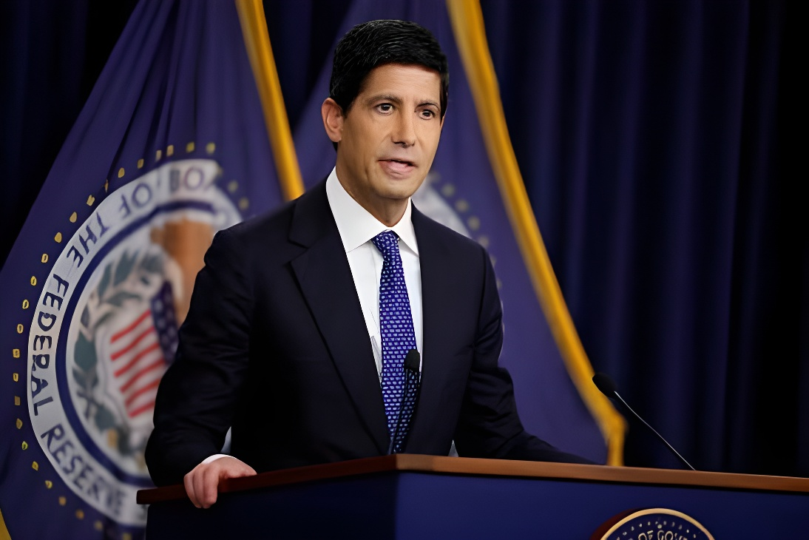

Réunie le 16 septembre 2026, la Réserve fédérale américaine a relevé à l'unanimité son taux directeur d'un quart de point, le portant à une fourchette de 3,75 % à 4 %. Il s'agit de la première hausse depuis 2023, décidée par le nouveau président de la Fed, Kevin Warsh, pour contenir une inflation ravivée par la flambée des prix du pétrole depuis le début de la guerre entre les États-Unis, Israël et l'Iran fin février 2026. La décision, qui va à l'encontre des appels répétés de Donald Trump à baisser les taux, ouvre une nouvelle phase de tension entre la Maison-Blanche et la banque centrale.
Réuni les 15 et 16 septembre 2026, le Comité fédéral de l'open market (FOMC) a voté à l'unanimité en faveur d'une hausse d'un quart de point de son taux directeur, désormais compris entre 3,75 % et 4 %. C'est la première décision de ce type prise par Kevin Warsh, qui a succédé à Jerome Powell à la tête de la Fed en mai 2026 après avoir été choisi par Donald Trump dans l'espoir, précisément, d'obtenir des baisses de taux. Le comité a également laissé entendre qu'une nouvelle hausse pourrait intervenir avant la fin de l'année.
La banque centrale justifie ce tour de vis par la persistance d'une inflation supérieure à son objectif de 2 %, portée par l'envolée des prix de l'énergie depuis le déclenchement, le 28 février 2026, du conflit entre les États-Unis, Israël et l'Iran. Le prix du baril de Brent a dépassé les 100 dollars, les prix de l'essence ont grimpé de plus de 45 % depuis le début de la guerre, et l'inflation a atteint 3,4 % en août, un niveau désormais supérieur à la croissance moyenne des salaires (3,1 %).
« Le simple fait est que l'inflation est trop élevée, et ce depuis trop longtemps. »
— Kevin Warsh, président de la Réserve fédérale, 16 septembre 2026Les États-Unis et Israël lancent une offensive contre l'Iran, déclenchant une flambée durable des prix du pétrole.
Kevin Warsh, choisi par Donald Trump pour succéder à Jerome Powell, prend la tête de la Fed.
Le FOMC maintient ses taux inchangés, mais trois de ses membres se prononcent déjà pour une hausse.
La Fed relève ses taux pour la première fois depuis 2023, à l'unanimité.
La décision de la Fed va directement à l'encontre des demandes répétées de Donald Trump, qui plaide depuis des mois pour des taux plus bas. Fin août, le président affirmait encore avoir « beaucoup de respect » pour Kevin Warsh et le laisser « faire ce qu'il a à faire », tout en jugeant que « nos taux d'intérêt sont trop élevés » et que les États-Unis « devraient avoir les taux d'intérêt les plus bas du monde ». Quelques jours avant la réunion de septembre, il était allé plus loin sur son réseau Truth Social, exigeant une baisse des taux sous peine, écrivait-il, de « cesser de commercer avec les pays avec lesquels nous avons un déficit ».
Plusieurs médias américains ont souligné que cette hausse « défie » les vœux du président, à quelques semaines des élections de mi-mandat, alors que les sondages montrent une inquiétude croissante des électeurs face au coût de la vie. Le paradoxe est frappant : Kevin Warsh avait été nommé par Trump dans l'espoir de voir la Fed baisser ses taux, et c'est pourtant sous sa présidence qu'intervient le premier resserrement monétaire depuis 2023, illustrant les limites de l'influence présidentielle sur une institution censée rester indépendante.
| Événement | Date | Ce qu'il révèle |
|---|---|---|
| Début de la guerre en Iran | 28 fév. 2026 | Point de départ du choc pétrolier et inflationniste |
| Prise de fonction de Kevin Warsh | Mai 2026 | Successeur choisi par Trump pour baisser les taux |
| Statu quo du FOMC, trois dissidents | Juillet 2026 | Premiers signes d'une hausse à venir |
| Hausse des taux de la Fed | 16 sept. 2026 | Première hausse depuis 2023, malgré Trump |
« Nous devrions avoir les taux d'intérêt les plus bas du monde. »
— Donald Trump, président des États-Unis, 31 août 2026En resserrant sa politique monétaire alors même que son président a été choisi pour faire l'inverse, la Fed rappelle qu'elle entend rester arbitrée par les chiffres de l'inflation plutôt que par les préférences de la Maison-Blanche. Mais tant que la guerre en Iran continuera de peser sur les prix de l'énergie, Kevin Warsh restera pris en étau entre un mandat de stabilité des prix qu'il revendique publiquement et un président qui ne cache pas son impatience, dans un climat politique rendu plus sensible encore par l'approche des élections de mi-mandat.
Meeting on September 16, 2026, the US Federal Reserve unanimously raised its benchmark interest rate by a quarter point, to a range of 3.75% to 4%. It is the first increase since 2023, decided by new Fed Chair Kevin Warsh to contain inflation reignited by surging oil prices since the war between the United States, Israel and Iran began in late February 2026. The decision, which runs counter to Donald Trump's repeated calls for lower rates, opens a new phase of tension between the White House and the central bank.
Meeting on September 15 and 16, 2026, the Federal Open Market Committee (FOMC) voted unanimously to raise its benchmark rate by a quarter point, to a range of 3.75% to 4%. It is the first such decision by Kevin Warsh, who succeeded Jerome Powell as Fed chair in May 2026 after being chosen by Donald Trump precisely in hopes of securing rate cuts. The committee also signaled that another increase could come before the end of the year.
The central bank justified the move by pointing to inflation still running above its 2% target, driven by soaring energy prices since the war between the United States, Israel and Iran began on February 28, 2026. Brent crude has traded above $100 a barrel, gasoline prices have risen more than 45% since the war began, and inflation reached 3.4% in August, now above average wage growth of 3.1%.
"The plain fact is that inflation is too high and has been for too long."
— Kevin Warsh, Chair of the Federal Reserve, September 16, 2026The United States and Israel launch an offensive against Iran, triggering a lasting surge in oil prices.
Kevin Warsh, chosen by Donald Trump to succeed Jerome Powell, takes over as Fed chair.
The FOMC leaves rates unchanged, but three members already dissent in favor of a hike.
The Fed raises rates for the first time since 2023, unanimously.
The Fed's decision runs directly counter to Donald Trump's repeated calls for lower rates. In late August, the president still said he had "a lot of respect" for Kevin Warsh and would let him "do what he has to do," while insisting that "our interest rates are too high" and that the United States "should have the lowest interest rates in the world." Days before the September meeting, he went further on Truth Social, demanding lower rates or, he wrote, he would "stop trading with countries with which we have a deficit."
Several US outlets noted that the hike "defies" the president's wishes just weeks before the midterm elections, at a time when polls show growing voter concern over the cost of living. The irony is striking: Kevin Warsh was appointed by Trump in hopes the Fed would cut rates, yet it is under his chairmanship that the first tightening since 2023 has arrived, underscoring the limits of presidential influence over an institution meant to remain independent.
| Event | Date | What it shows |
|---|---|---|
| Start of the Iran war | Feb 28, 2026 | The starting point of the oil and inflation shock |
| Kevin Warsh takes office | May 2026 | Successor chosen by Trump to lower rates |
| FOMC holds, three dissents | July 2026 | Early signs of a coming hike |
| Fed raises rates | Sept 16, 2026 | First hike since 2023, despite Trump |
"We should have the lowest interest rates in the world."
— Donald Trump, President of the United States, August 31, 2026By tightening policy even though its chair was chosen to do the opposite, the Fed is signaling it intends to be guided by inflation data rather than White House preferences. But as long as the Iran war keeps pushing up energy prices, Kevin Warsh will remain caught between the price-stability mandate he publicly claims and a president who makes little secret of his impatience, in a political climate made even more sensitive by the approaching midterm elections.